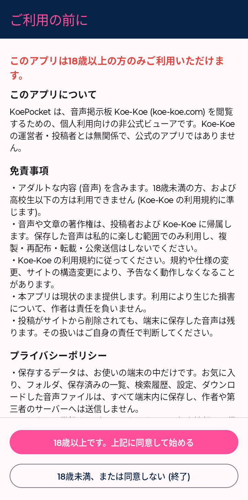
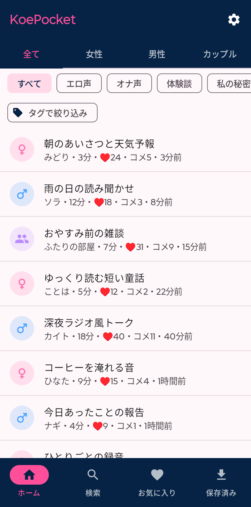
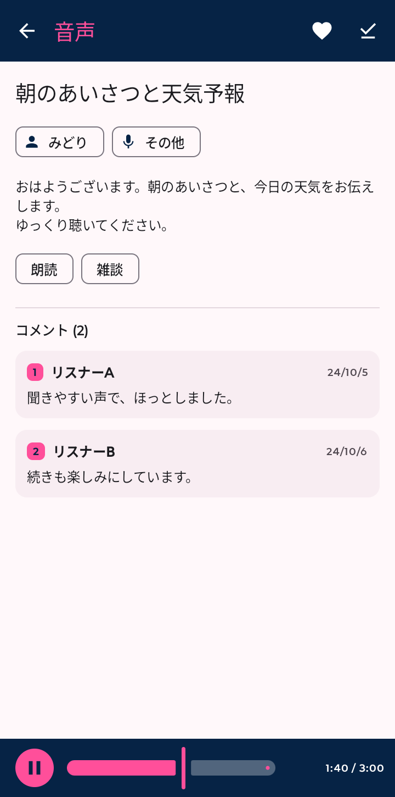
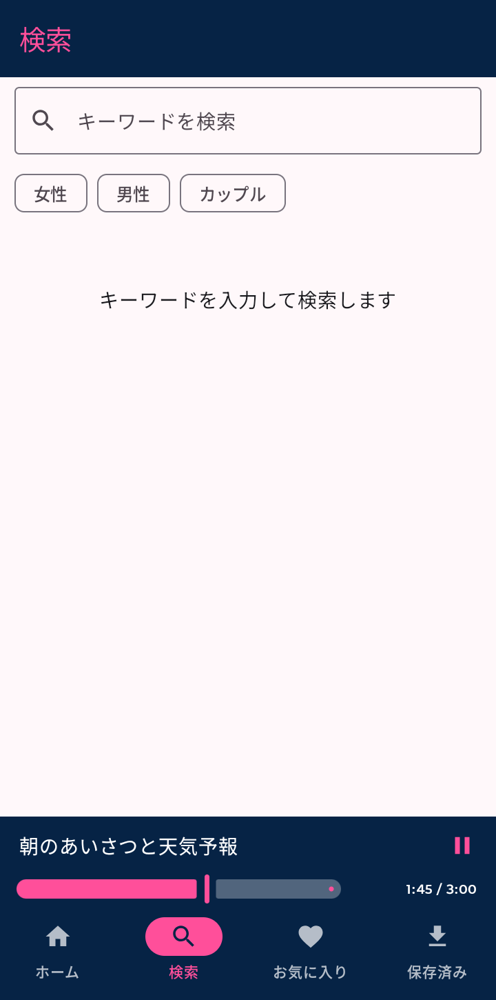
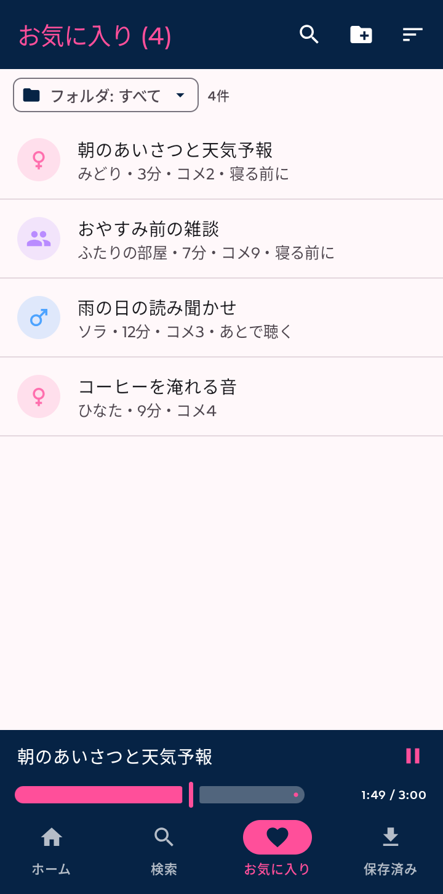
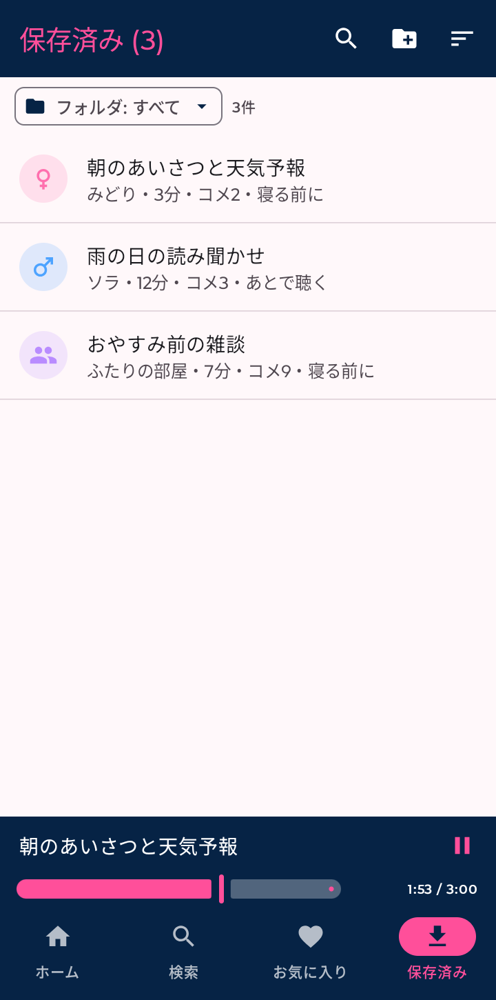
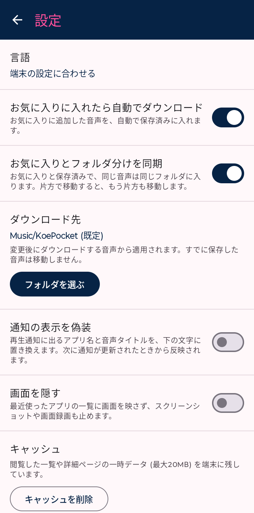

音声掲示板 Koe-Koe を Android で快適に閲覧する、個人利用向けの非公式ビューア。一覧・検索・再生、お気に入りと保存まで。
APK をダウンロード GitHub18歳以上限定 / Android 8.0 以上 / Koe-Koe とは無関係の非公式アプリです
カテゴリやジャンルで絞り込み、キーワード検索。検索履歴も端末内に保存。
画面を閉じても再生を継続。再生通知のアプリ名とタイトルを、好みの文字に置き換えられます。
好きな投稿をフォルダに分けて整理できます。お気に入りと保存済みのフォルダは同期されます。
音声を端末に保存できます。保存先は設定で変更できます。
最近使ったアプリの一覧とスクリーンショットに、画面を映しません（設定で変更できます）。
日本語・English・简体中文・繁體中文・한국어。







画像に写る投稿は、動作確認用に作ったダミーです。実在の投稿ではありません。